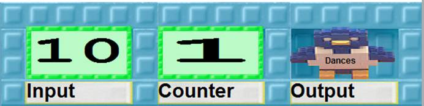
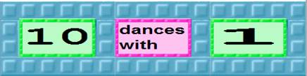
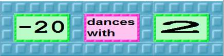
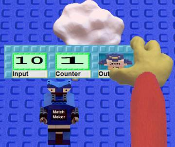
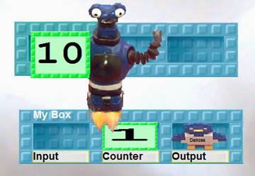
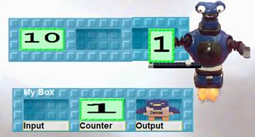
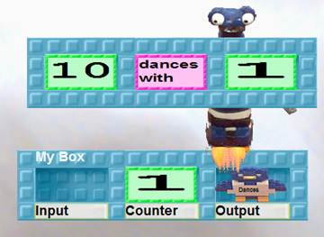
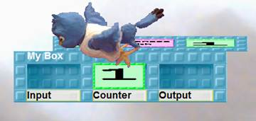
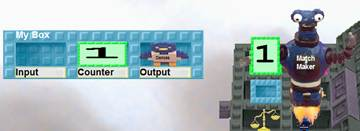
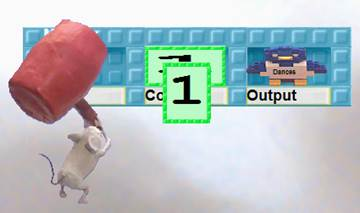

Activity 3:
Generating different infinite sequences
CHALLENGE
Do all infinite sequences have the same size? How can you compare the “sizes of infinite sequences”?
Train robots and use some of the robots you already have to generate infinite sequences. Make each one different. [KK1]
Make up your own sequences. Here are some examples
1, 4, 9, 16, 25 … [A robot that squares each natural number it receives.]
.001, .002, .003 … [A robot that multiples each natural number by .001.]
1/2, 2 1/2, 1/3, 3 1/3, 1/4, 4 1/4 … [A robot that produces two numbers for each natural number it receives.]
1, -1/3, 1/5, -1/7, 1/9 … [A robot that takes the reciprocal and alternates the sign for each odd number it receives.]
Use fractions in at least one and negative numbers in another. Make one grow slowly and another grow quickly. Try to be creative!
Sequence 1
Write down the first five numbers:
How would you describe your sequence in words?
Does your sequence contain any duplicates?[KK2]
Sequence 2
Write down the first five numbers:
How would you describe your sequence in words?
Does your sequence contain any duplicates?
Sequence 3
Write down the first five numbers:
How would you describe your sequence in words?
Does your sequence contain any duplicates?
Post the robots that make your sequences on the web. Find three robots made by other students on the web.
Sequence 1
Write down the first five numbers:
How would you describe your sequence in words?
Does your sequence contain any duplicates?
Sequence 2
Write down the first five numbers:
How would you describe your sequence in words?
Does your sequence contain any duplicates?
Sequence 3
Write down the first five numbers:
How would you describe your sequence in words?
Does your sequence contain any duplicates?
Train a robot named Match Maker match up incoming numbers with the natural numbers. Train it so when it has a box like

it makes the box

and gives it to the Dances bird.
If the next Input number is -20 Match Maker should give the bird the box

For help training Match Maker look at the pictorial instructions.
Try out Match Maker with some of the sequences you created and the sequences you found on the web.
If all the robots run forever will each number in the sequence be dancing with a different natural number?
Explain.
Will all the natural numbers have a different dancing partner?[KK3]
Explain.
Write a Web Report with your team members on whether all sequences that go on forever and have no duplicates have the same number of terms.
Questions to answer in the report:
1. When you can say two infinite sequences have the same size?
2. Can you give an example of two infinite sequences that have different sizes? If not, why not?
3. If an infinite sequence includes duplicates might it have only a finite number of different terms? If so give an example. If not explain why.
4. Can you describe sequences that can’t be programmed?
5. Are there infinite sequences that have so many terms they can’t be counted?
Read the other Web Reports that answer these questions. If you find reports that give answers different from your report, then add comments to their report.
Activity 3, Task C: Training Match Maker
|
 |
 |
|
 |
 |
|
 |
 |
|
 |
|
[KK1]This task could be combined with the Guess My Robot WebLabs activity.
[KK2]The reason that this activity and later ones bring up the question of duplicates is so that conclusions about the cardinality of infinite sequences can be easily generalized to include the cardinality of infinite sets.
Consider the sequences
1, 1, 1, …
and
1, 2, 3, …
they have the same cardinality but because of duplicates {1} and {1,2,3, …} don’t.
[KK3]If you can build a program to generate an infinite sequence without duplicates then you have made a one-to-one mapping.